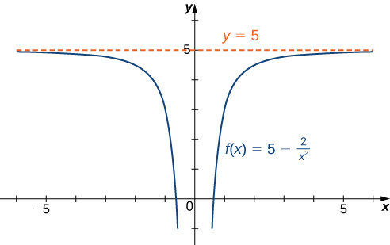
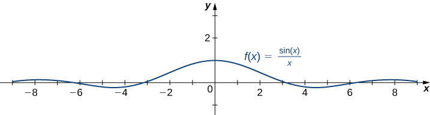
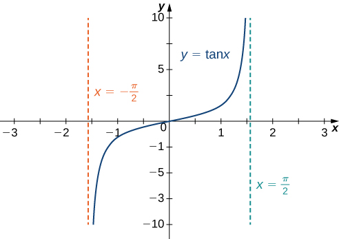
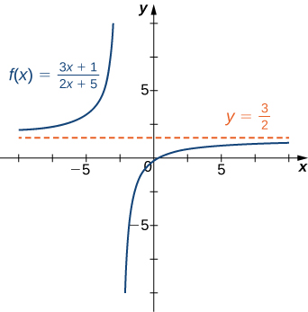
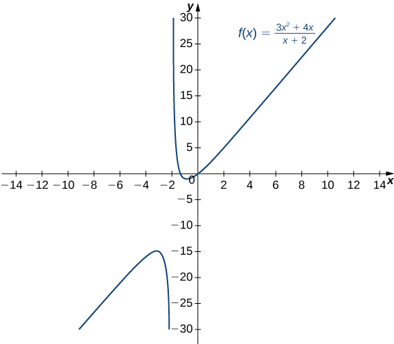

Up until this point we have discussed what happens to a function as we move its input \(x\) closer and closer to a particular point \(a\text{.}\) For a great many applications of limits we need to understand what happens to a function when its input becomes extremely large — for example what happens to a population at a time far in the future.
The definition of a limit at infinity has a similar flavour to the definition of limits at finite points that we saw above, but the details are a little different. We also need to distinguish between positive and negative infinity. As \(x\) becomes very large and positive it moves off towards \(+\infty\) but when it becomes very large and negative it moves off towards \(-\infty\text{.}\)
Subsection2.6.1Limits at Infinity and Horizontal Asymptotes
Recall that \(\limit_{x\to a}f(x)=L\) means \(f(x)\) becomes arbitrarily close to \(L\) as long as \(x\) is sufficiently close to \(a.\) We can extend this idea to limits at infinity. For example, consider the function \(\ds f(x)=2+\frac{1}{x}.\) As can be seen graphically in Figure 2.6.1 and numerically in Table 2.6.2, as the values of \(x\) get larger, the values of \(f(x)\) approach \(2.\) We say the limit as \(x\) approaches \(\infty\) of \(f(x)\) is \(2\) and write \(\limit_{x\to\infty}f(x)=2.\) Similarly, for \(x\lt 0,\) as the values \(|x|\) get larger, the values of \(f(x)\) approaches \(2.\) We say the limit as \(x\) approaches \(-\infty\) of \(f(x)\) is \(2\) and write \(\limit_{x\to a}f(x)=2.\)
More generally, for any function \(f,\) we say the limit as \(x\to\infty\) of \(f(x)\) is \(L\) if \(f(x)\) becomes arbitrarily close to \(L\) as long as \(x\) is sufficiently large. In that case, we write \(\limit_{x\to\infty}f(x)=L.\) Similarly, we say the limit as \(x\to-\infty\) of \(f(x)\) is \(L\) if \(f(x)\) becomes arbitrarily close to \(L\) as long as \(x\lt 0\) and \(|x|\) is sufficiently large. In that case, we write \(\limit_{x\to-\infty}f(x)=L.\) We now look at the definition of a function having a limit at infinity.
(Informal) If the values of \(f(x)\) become arbitrarily close to \(L\) as \(x\) becomes sufficiently large, we say the function \(f\) has a limit at infinity and write
If the values of \(f(x)\) becomes arbitrarily close to \(L\) for \(x\lt 0\) as \(|x|\) becomes sufficiently large, we say that the function \(f\) has a limit at negative infinity and write
If the values \(f(x)\) are getting arbitrarily close to some finite value \(L\) as \(x\to\infty\) or \(x\to-\infty,\) the graph of \(f\) approaches the line \(y=L.\) In that case, the line \(y=L\) is a horizontal asymptote of \(f\) (Figure 2.6.5). For example, for the function \(f(x)=\frac{1}{x},\) since \(\limit_{x\to\infty}f(x)=0,\) the line \(y=0\) is a horizontal asymptote of \(f(x)=\frac{1}{x}.\)
Figure2.6.5.(a) As \(x\to\infty,\) the values of \(f\) are getting arbitrarily close to \(L.\) The line \(y=L\) is a horizontal asymptote of \(f.\) (b) As \(x\to-\infty,\) the values of \(f\) are getting arbitrarily close to \(M.\) The line \(y=M\) is a horizontal asymptote of \(f.\)
A function cannot cross a vertical asymptote because the graph must approach infinity (or \(-\infty)\) from at least one direction as \(x\) approaches the vertical asymptote. However, a function may cross a horizontal asymptote. In fact, a function may cross a horizontal asymptote an unlimited number of times. For example, the function \(f(x)=\frac{(\text{ cos } x)}{x}+1\) shown in Figure 2.6.6 intersects the horizontal asymptote \(y=1\) an infinite number of times as it oscillates around the asymptote with ever-decreasing amplitude.
The algebraic limit laws and squeeze theorem we introduced in Section 2.4 also apply to limits at infinity. We illustrate how to use these laws to compute several limits at infinity.
For each of the following functions \(f,\) evaluate \(\limit_{x\to\infty}f(x)\) and \(\limit_{x\to-\infty}f(x).\) Determine the horizontal asymptote(s) for \(f.\)
Using the algebraic limit laws, we have \(\limit_{x\to\infty}(5-\frac{2}{x^2})=\limit_{x\to\infty}5-2(\limit_{x\to\infty}\frac{1}{x}).(\limit_{x\to\infty}\frac{1}{x})=5-2\cdot0=5.\) Similarly, \(\limit_{x\to-\infty}f(x)=5.\) Therefore, \(f(x)=5-\frac{2}{x^2}\) has a horizontal asymptote of \(y=5\) and \(f\) approaches this horizontal asymptote as \(x\to\pm\infty\) as shown in the following graph.

Figure2.6.8.This function approaches a horizontal asymptote as \(x\to\pm\infty.\)
Thus, \(f(x)=\frac{\sin x}{x}\) has a horizontal asymptote of \(y=0\) and \(f(x)\) approaches this horizontal asymptote as \(x\to\pm\infty\) as shown in the following graph.

Figure2.6.9.This function crosses its horizontal asymptote multiple times.
To evaluate \(\limit_{x\to\infty}\tan^{-1} (x)\) and \(\limit_{x\to-\infty}\tan^{-1} (x),\) we first consider the graph of \(y=\tan (x)\) over the interval \((-\pi/2,\pi/2)\) as shown in the following graph.

Figure2.6.10.The graph of \(\tan x\) has vertical asymptotes at \(x=\pm\frac{\pi}{2}\)
Evaluate \(\limit_{x\to-\infty}(3+\frac{4}{x})\) and \(\limit_{x\to\infty}(3+\frac{4}{x}).\) Determine the horizontal asymptotes of \(f(x)=3+\frac{4}{x},\) if any.
Sometimes the values of a function \(f\) become arbitrarily large as \(x\to\infty\) (or as \(x\to-\infty).\) In this case, we write \(\limit_{x\to\infty}f(x)=\infty\) (or \(\limit_{x\to-\infty}f(x)=\infty).\) On the other hand, if the values of \(f\) are negative but become arbitrarily large in magnitude as \(x\to\infty\) (or as \(x\to-\infty),\) we write \(\limit_{x\to\infty}f(x)=-\infty\) (or \(\limit_{x\to-\infty}f(x)=-\infty).\)
For example, consider the function \(f(x)=x^3.\) As seen in Table 2.6.13 and Figure 2.6.14, as \(x\to\infty\) the values \(f(x)\) become arbitrarily large. Therefore, \(\limit_{x\to\infty}x^3=\infty.\) On the other hand, as \(x\to-\infty,\) the values of \(f(x)=x^3\) are negative but become arbitrarily large in magnitude. Consequently, \(\limit_{x\to-\infty}x^3=-\infty.\)
When \(x\) is very large, \(x^{7/5} = x\cdot x^{2/5}\) will be much larger than \(x\text{,}\) so the \(x^{7/5}\) term will dominate the \(x\) term. So factor out \(x^{7/5}\) and rewrite it as
Consider what happens to each of the factors as \(x \to \infty\)
For large \(x\text{,}\)\(x^{7/5} \gt x\) (this is actually true for any \(x \gt 1\)). In the limit as \(x \to +\infty\text{,}\)\(x\) becomes arbitrarily large and positive, and \(x^{7/5}\) must be bigger still, so it follows that
Earlier, we used the terms arbitrarily close, arbitrarily large, and sufficiently large to define limits at infinity informally. Although these terms provide accurate descriptions of limits at infinity, they are not precise mathematically. Here are more formal definitions of limits at infinity. We then look at how to use these definitions to prove results involving limits at infinity.
(Formal) We say a function \(f\) has a limit at infinity, if there exists a real number \(L\) such that for all \(\varepsilon \gt 0,\) there exists \(N\gt 0\) such that
We say a function \(f\) has a limit at negative infinity if there exists a real number \(L\) such that for all \(\varepsilon \gt 0,\) there exists \(N\lt 0\) such that
Earlier in this section, we used graphical evidence in Figure 2.6.1 and numerical evidence in Table 2.6.2 to conclude that \(\limit_{x\to\infty}(2+\frac{1}{x})=2.\) Here we use the formal definition of limit at infinity to prove this result rigorously.
Earlier, we used graphical evidence (Figure 2.6.14) and numerical evidence (Table 2.6.13) to conclude that \(\limit_{x\to\infty}x^3=\infty.\) Here we use the formal definition of infinite limit at infinity to prove that result.
Subsection2.6.4End Behavior for Polynomials Functions
The behavior of a function as \(x\to\pm\infty\) is called the function’s end behavior. At each of the function’s ends, the function could exhibit one of the following types of behavior:
The function does not approach a finite limit, nor does it approach \(\infty\) or \(-\infty.\) In this case, the function may have some oscillatory behavior.
Using these facts, it is not difficult to evaluate \(\limit_{x\to\infty}cx^n\) and \(\limit_{x\to-\infty}cx^n,\) where \(c\) is any constant and \(n\) is a positive integer. If \(c\gt 0,\) the graph of \(y=cx^n\) is a vertical stretch or compression of \(y=x^n,\) and therefore
Since the coefficient of \(x^3\) is \(-5,\) the graph of \(f(x)=-5x^3\) involves a vertical stretch and reflection of the graph of \(y=x^3\) about the \(x\)-axis. Therefore, \(\limit_{x\to\infty}(-5x^3)=-\infty\) and \(\limit_{x\to-\infty}(-5x^3)=\infty.\)
Since the coefficient of \(x^4\) is \(2,\) the graph of \(f(x)=2x^4\) is a vertical stretch of the graph of \(y=x^4.\) Therefore, \(\limit_{x\to\infty}2x^4=\infty\) and \(\limit_{x\to-\infty}2x^4=\infty.\)
We now look at how the limits at infinity for power functions can be used to determine \(\limit_{x\to\pm\infty}f(x)\) for any polynomial function \(f.\) Consider a polynomial function
Subsection2.6.5End Behavior for Algebraic Functions
The end behavior for rational functions and functions involving radicals is a little more complicated than for polynomials. In Example 2.6.31, we show that the limits at infinity of a rational function \(f(x)=\frac{p(x)}{q(x)}\) depend on the relationship between the degree of the numerator and the degree of the denominator. To evaluate the limits at infinity for a rational function, we divide the numerator and denominator by the highest power of \(x\) appearing in the denominator. This determines which term in the overall expression dominates the behavior of the function at large values of \(x.\)
Example2.6.31.Determining End Behavior for Rational Functions.
For each of the following functions, determine the limits as \(x\to\infty\) and \(x\to-\infty.\) Then, use this information to describe the end behavior of the function.
The highest power of \(x\) in the denominator is \(x.\) Therefore, dividing the numerator and denominator by \(x\) and applying the algebraic limit laws, we see that
Since \(\limit_{x\to\pm\infty}f(x)=\frac{3}{2},\) we know that \(y=\frac{3}{2}\) is a horizontal asymptote for this function as shown in the following graph.

Figure2.6.32.The graph of this rational function approaches a horizontal asymptote as \(x\to\pm\infty.\)
Since the largest power of \(x\) appearing in the denominator is \(x^3,\) divide the numerator and denominator by \(x^3.\) After doing so and applying algebraic limit laws, we obtain
As \(x\to\pm\infty,\) the denominator approaches \(1.\) As \(x\to\infty,\) the numerator approaches \(+\infty.\) As \(x\to-\infty,\) the numerator approaches \(-\infty.\) Therefore \(\limit_{x\to\infty}f(x)=\infty,\) whereas \(\limit_{x\to-\infty}f(x)=-\infty\) as shown in the following figure.

Figure2.6.34.As \(x\to\infty,\) the values \(f(x)\to\infty.\) As \(x\to-\infty,\) the values \(f(x)\to-\infty.\)
Evaluate \(\limit_{x\to\pm\infty}\frac{3x^2+2x-1}{5x^2-4x+7}\) and use these limits to determine the end behavior of \(f(x)=\frac{3x^2+2x-1}{5x^2-4x+7}.\)
Before proceeding, consider the graph of \(f(x)=\frac{(3x^2+4x)}{(x+2)}\) shown in Figure 2.6.36. As \(x\to\infty\) and \(x\to-\infty,\) the graph of \(f\) appears almost linear. Although \(f\) is certainly not a linear function, we now investigate why the graph of \(f\) seems to be approaching a linear function. First, using long division of polynomials, we can write
Therefore, the graph of \(f\) approaches the line \(y=3x-2\) as \(x\to\pm\infty.\) This line is known as an oblique asymptote for \(f\) (Figure 2.6.36).
We can summarize the results of Example 2.6.31 to make the following conclusion regarding end behavior for rational functions. Consider a rational function
If the degree of the numerator is the same as the degree of the denominator \((n=m),\) then \(f\) has a horizontal asymptote of \(y=a_n/b_m\) as \(x\to\pm\infty.\)
If the degree of the numerator is less than the degree of the denominator \((n\lt m),\) then \(f\) has a horizontal asymptote of \(y=0\) as \(x\to\pm\infty.\)
If the degree of the numerator is greater than the degree of the denominator \((n\gt m),\) then \(f\) does not have a horizontal asymptote. The limits at infinity are either positive or negative infinity, depending on the signs of the leading terms. In addition, using long division, the function can be rewritten as
where the degree of \(r(x)\) is less than the degree of \(q(x).\) As a result, \(\limit_{x\to\pm\infty}r(x)/q(x)=0.\) Therefore, the values of \([f(x)-g(x)]\) approach zero as \(x\to\pm\infty.\) If the degree of \(p(x)\) is exactly one more than the degree of \(q(x)\)\((n=m+1),\) the function \(g(x)\) is a linear function. In this case, we call \(g(x)\) an oblique asymptote. Now let’s consider the end behavior for functions involving a radical.
The biggest contribution to the numerator comes from the \(4x^2\) inside the square-root. When we pull \(x^2\) outside the square-root it becomes \(x\text{,}\) so the numerator is dominated by \(x \cdot \sqrt{4} = 2x\)
Now let us also think about the limit of the same function, \(\frac{\sqrt{4x^2+1}}{5x-1}\text{,}\) as \(x \rightarrow -\infty\text{.}\) There is something subtle going on because of the square-root. First consider the function
We’ll get much the same thing for any \(x \geq 0\text{.}\) For any \(x \ge 0\text{,}\)\(h(x)=\sqrt{t^2}\) returns exactly \(x\text{.}\) However now consider the function at \(x=-3\)
This is because when we defined \(\sqrt{\text{ }}\text{,}\) we defined it to be the positive square-root. i.e. the function \(\sqrt{x}\) can never return a negative number. So being more careful
\begin{align*}
h(x) &= \sqrt{x^2} = | x |
\end{align*}
Where the \(|x|\) is the absolute value of \(x\text{.}\) You are perhaps used to thinking of absolute value as “remove the minus sign”, but this is not quite correct. Let’s sketch the function
We use the same trick — try to work out what is the biggest term in the numerator and denominator and pull it to one side. Since we are taking the limit as \(x \to -\infty\) we should think of \(x\) as a large negative number.
The biggest contribution to the numerator comes from the \(4x^2\) inside the square-root. When we pull the \(x^2\) outside a square-root it becomes \(|x| = -x\) (since we are taking the limit as \(x \to -\infty\)), so the numerator is dominated by \(-x\cdot\sqrt{4} = -2x\)
So the limit as \(x \to -\infty\) is almost the same but we gain a minus sign. This is definitely not the case in general — you have to think about each example separately.